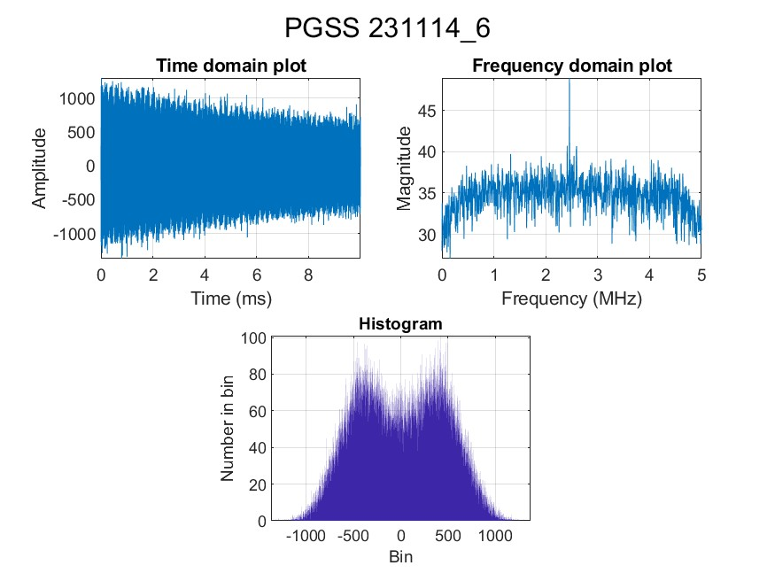
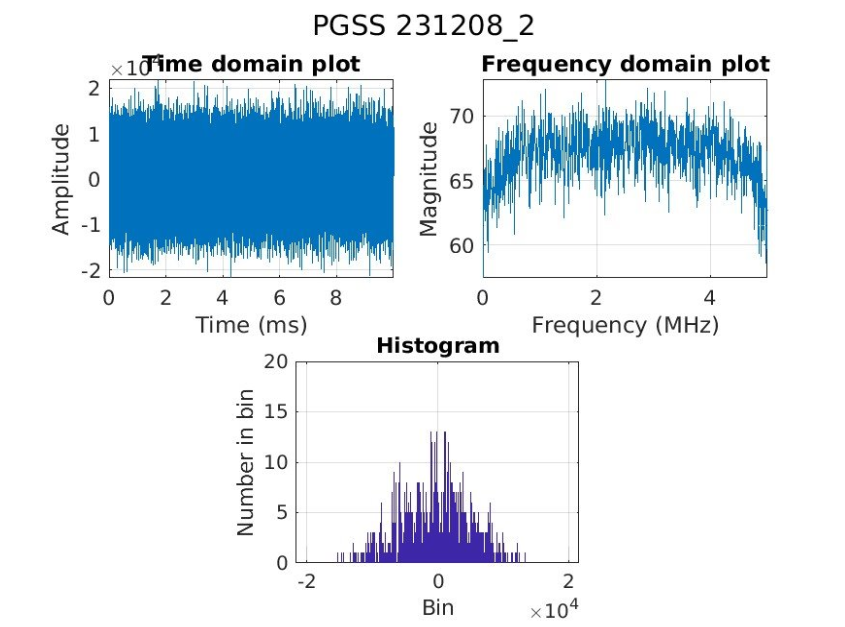
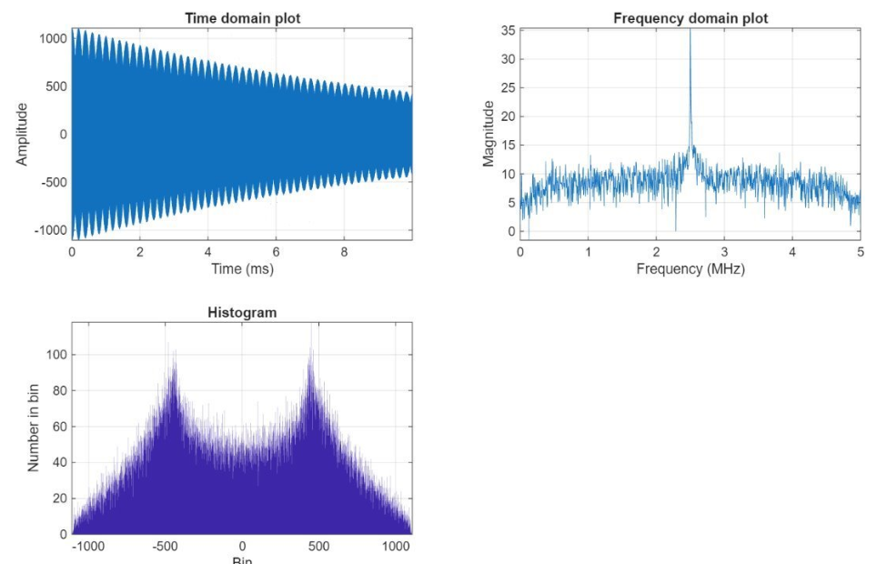
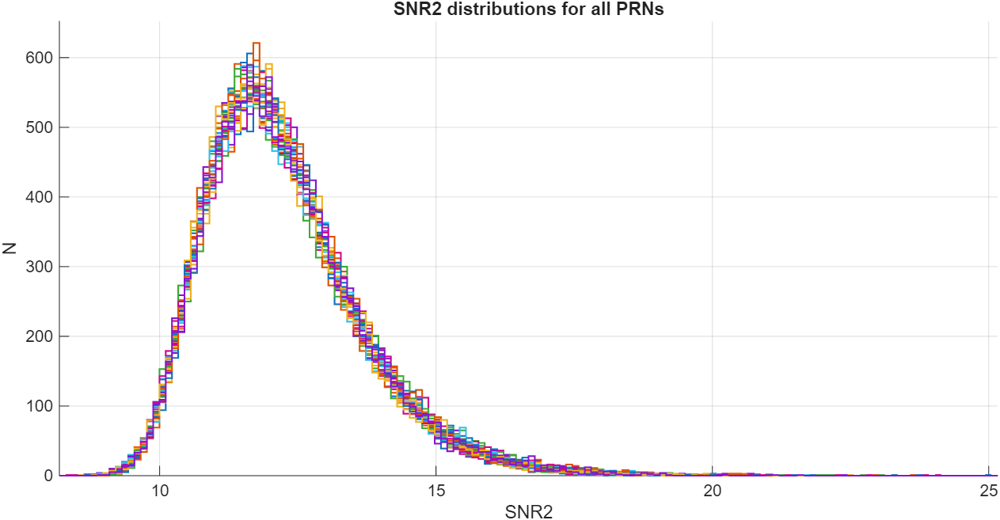
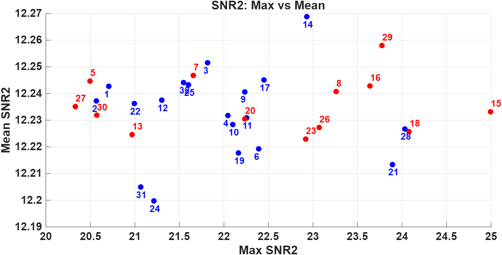

Overview
As an Aerospace Researcher at Illinois Tech, I am conducting research in Global Navigation Satellite System Reflectometry (GNSS-R), focusing on the processing and analysis of reflected GNSS signals collected over Antarctic glacial surfaces. Working with raw radio-frequency data acquired using a USRP-based receiver, I developed MATLAB-based signal processing algorithms to extract surface reflection characteristics and quantify signal-to-noise behavior in low-SNR environments.
The data was collected on the McMurdo Ice Shelf at two sites: Phoenix (PHNX), which was primarily snow-covered, and Pegasus (PGSS), which contained mixed bare ice and patchy snow. The campaign included observations between November and December 2023, producing approximately 2.25 TB of data across 62 total observation instances. This work examines whether signals reflected from glacial surfaces can be used to identify and study surface conditions — a technique with significant value in Antarctica, where large regions are difficult to observe directly.
My work involves raw data verification, coherent and incoherent integration processing, SNR metric computation, and PRN-level distribution analysis. This research is supported by NASA Illinois Space Grant and NSF Award No. 1940483, and the results are contributing to an upcoming peer-reviewed publication. Work is ongoing post-graduation.
Research Workflow
The processing pipeline moves from raw binary verification through acquisition-based SNR analysis and finally to a distribution-level comparison of in-sky vs. out-of-sky satellites. The sections below follow that workflow in order, with representative figures from the analysis at each stage.
1 — Raw Data Confirmation
Data analysis began with an initial exploration of the raw binary files. Each selected file was read into MATLAB and three diagnostic plots were generated: a time-domain trace to inspect the base behavior of the acquired signal, a Welch power spectral density estimate to examine the frequency distribution, and a histogram of sample values to show the distribution of the raw data. Together these gave a quick visual check of signal quality and spectral content before any further processing.
The raw data confirmation was first performed on measurements collected in the Antarctic lab intended to represent noise only. As seen in the noise-only figure below, the amplitude of the time-domain plot slowly settles over time while the frequency-domain plot shows a single broad hump with a spike near 2.5 MHz — a profile that is characteristic of receiver noise and distinct from a real GNSS signal. This noise profile served as the baseline for identifying valid collection periods.

Following the noise confirmation, the same diagnostic was applied to each field collection day. The figure below shows one check from the PGSS site on December 8. The increase in amplitude and frequency-domain magnitude corresponds to the USRP being connected to the automatic gain control system. A notable observation across most collection dates was the absence of a clear frequency peak, which was puzzling and warranted additional analysis at later stages.

An irregularity was discovered at the PHNX site on this same date. The first five measurements showed a frequency profile — a single prominent peak with significant amplitude and magnitude reduction — that closely matched the noise-only data. On-site notes confirmed that the USRP was powered but not connected to the appropriate receiver hardware during these collections. These five segments were therefore excluded from all subsequent analysis.

2 — SNR Processing
After raw data confirmation, the goal was to determine whether reflected GNSS signals could be acquired from the collected data. Before using the data to analyze surface conditions, it was first necessary to check whether any consistent satellite acquisition signal could be detected. SNR processing was therefore treated as an acquisition and signal quality check rather than a full surface analysis.
The final processing run used the December 8, 2023 Part 2 PGSS dataset. This run analyzed five minutes of data after skipping the first five seconds (to allow receiver stabilization), and processed the data in sequential 20 ms chunks, each containing two 10 ms coherent blocks.
Signal Preparation
The original USRP data was stored as .dat files containing interleaved int16
in-phase and quadrature samples recorded at 5 MHz. These were preprocessed using a set of
MATLAB scripts that applied an FFT-based conversion to produce real-valued .bin
files. Within the acquisition script, the binary data was read back as interleaved sample pairs,
separated into I and Q components, and recombined into a complex signal
r[n] = I[n] + jQ[n] for the GNSS acquisition search.
PRN Acquisition Search
The acquisition routine searched for GPS PRNs 1 through 32. For each PRN, the data was
correlated against the expected GPS C/A code generated using makeCATable, a
function from the standard SoftGNSS receiver framework. The search swept possible code phases
and Doppler bins, producing an acquisition map for each PRN where stronger values indicated
greater agreement between the recorded signal and the expected satellite code. The strongest
point in each map was identified as the primary peak, and a secondary peak was found outside
a protected zone around the main peak.
During early acquisition runs, the Doppler bin associated with the peak shifted significantly between processing chunks, suggesting that some detected peaks reflected noise or unstable multipath rather than a stable reflected GNSS signal.
Coherent Block Processing
The acquisition method was modified to use 10 ms coherent processing blocks to better handle possible navigation bit transitions while still examining short-time signal behavior. The data was divided into 10 ms coherent blocks, adjacent blocks were grouped into 20 ms pairs, and for each pair the block with the stronger acquisition peak was retained. The weaker block was discarded. This approach reduces the likelihood that GPS navigation bit flips degrade the coherent sum by changing sign across the integration period.
The 10 ms processing method followed these steps:
- Split the signal into 10 ms coherent blocks.
- Group adjacent 10 ms blocks into 20 ms pairs.
- Compute an acquisition map for each 10 ms block.
- Compare the two blocks in each pair.
- Keep the block with the stronger peak.
- Compute final SNR metrics for each PRN.
Incoherent Integration Tests
Longer incoherent integration windows (e.g., 100 ms) were also tested by summing multiple retained 10 ms acquisition maps to check whether persistent signal energy would accumulate. These tests showed that the dominant peak often shifted between Doppler bins and code phases from chunk to chunk. Because the peak did not remain fixed, the summed maps showed background accumulation rather than a clear strengthening of a stable reflection.
The figures below show five kept coherent maps for PRN 18 alongside the final incoherently summed map. The red marker in each map indicates the strongest peak. The peak location changes between individual maps, and the final incoherent sum does not show a stable buildup at one Doppler/code-phase location — supporting the conclusion that longer integration primarily increases background level rather than recovering a persistent reflected signal. Based on these results, incoherent integration was not applied in the final processing run.
SNR Metrics
Two main metrics were used to evaluate the acquisition results. The PeakMetric measures how clearly the main correlation peak stands out relative to the next strongest peak:
where P₁ is the strongest acquisition peak and P₂ is the second strongest. The SNR2 metric measures how much the main peak rises above the average background level of the acquisition map:
where N̅ is the mean background level computed outside an exclusion region of approximately ±1 chip around the primary peak. Both metrics were tracked because they describe different aspects of the acquisition result: PeakMetric captures separation from competing peaks, while SNR2 captures elevation above the noise floor. For reflected GNSS signals, surface scattering can produce multiple competing peaks, making the SNR2 metric particularly informative.
3 — PRN Distribution Analysis
The acquisition process was repeated over the full five-minute data segment, saving PeakMetric and SNR2 for all 32 PRNs once every 20 ms chunk. This produced a time history of signal-quality metrics for each PRN across the entire processing run.
The saved values were used to generate histograms, time histories, mean-versus-maximum plots, and upper-tail comparisons. The main goal was not to identify a single PRN from a single acquisition result, but to check whether the statistical behavior of visible and non-visible satellites differed systematically. A reflected signal may not appear as a consistently high SNR value — it may instead appear as occasional high-SNR spikes — so maximum values and high-SNR clusters were considered alongside the overall distributions.

4 — In-Sky and Out-of-Sky PRN Comparison
PRNs were compared based on expected satellite visibility. The expected visible satellites were identified using the Trimble GNSS Planning skyplot tool for the PGSS station on December 8, 2023, at approximately 03:40 UTC — the time corresponding to the December 8 Part 2 dataset. PRNs above the horizon were labeled in-sky; the remaining PRNs were labeled out-of-sky. The initial in-sky set was:
Some in-sky PRNs showed larger SNR2 spikes and higher maximum SNR2 values compared to out-of-sky PRNs. However, the full distributions still overlapped strongly, meaning the two groups could not be cleanly separated using SNR2 alone. Additional filtering by satellite geometry could be considered — for example, removing PRNs whose azimuths fell in the 180°–300° range (a walking path with higher multipath risk) and PRN 13 (whose Fresnel zone intersected the secondary tower location) — but these were not removed from the current analysis.

5 — Results & Summary
The SNR processing showed that reflected-signal acquisition was not clear-cut for the selected dataset. Some PRNs produced stronger maximum SNR2 values and occasional high-SNR spikes, especially among the in-sky PRNs. However, the SNR2 distributions for all 32 PRNs overlapped significantly, and there was no distinct separation between in-sky and out-of-sky groups beyond a few partial clusters in the mean-versus-maximum comparisons.
The comparison between PeakMetric and SNR2 showed that the two metrics did not always identify the same PRNs as strongest: a PRN could have a strong peak relative to the background while still having competing nearby peaks, or vice versa. This confirmed the value of tracking both metrics independently during analysis.
The incoherent integration tests confirmed that longer accumulation did not automatically improve SNR2 results. When the acquisition peak shifted between Doppler bins and code phases across retained maps, the final summed map showed background growth rather than signal buildup. This established that the current processing approach has important limits and identified clear directions for future improvement before the data can support reliable surface-condition analysis.
Key Takeaways
- Some visible satellites may produce stronger reflected signals useful for further study.
- Current processing does not yet definitively acquire signals or achieve clean separation between PRN groups.
- Longer incoherent integration is not effective when the acquisition peak is unstable across chunks.
- SNR processing is best treated as an acquisition/quality screening step; full surface analysis requires further algorithm development.
Future Work
- Expand the in-sky vs. out-of-sky comparison across additional collection dates.
- Improve SNR processing and reflected-signal detection methods.
- Compare insights from GNSS-R and GNSS-IR (Interferometric Reflectometry) analyses.
- Connect successful acquisition results to glacial surface condition interpretation.